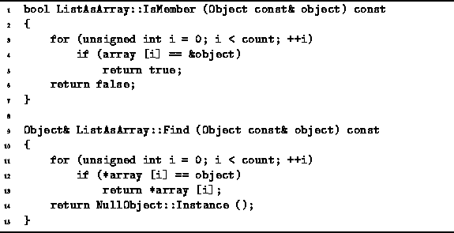

Data Structures and Algorithms
with Object-Oriented Design Patterns in C++
Data Structures and Algorithms
with Object-Oriented Design Patterns in C++
Program  defines two ListAsArray class
accessor functions which search for an object in the ordered list.
The IsMember function tests whether a particular object
instance is in the ordered list.
The Find function locates in the list
an object which matches its argument.
defines two ListAsArray class
accessor functions which search for an object in the ordered list.
The IsMember function tests whether a particular object
instance is in the ordered list.
The Find function locates in the list
an object which matches its argument.

Program: ListAsArray Class IsMember and Find Member Function Definitions
The IsMember function is a Boolean-valued function
which takes as its lone argument a const reference to an Object.
This function compares one-by-one the pointers contained in array
with the address of the argument.
Thus, this function tests whether a particular object instance
is contained in the ordered list.
In the worst case, the object sought is not in the list.
In this case, the running time of the function is O(n),
where  is the number of items in the ordered list.
is the number of items in the ordered list.
The Find function also does a search of the ordered list.
It also takes a single argument which is a const reference to
an Object.
However, find does not compare addresses.
Instead, it uses operator== to compare the items.
Thus, the Find function searches the list
for an object which compares equal to its argument.
The Find function returns a reference to the object found.
If no match is found,
it returns a reference to the NullObject instance.
The running time of this function depends on the time required
for the comparison operator,  .
In the worst case, the object sought is not in the list.
In this case the running time is
.
In the worst case, the object sought is not in the list.
In this case the running time is  .
For simplicity, we will assume that the comparison
takes a constant amount of time.
Hence, the running time of the function is also O(n),
where
.
For simplicity, we will assume that the comparison
takes a constant amount of time.
Hence, the running time of the function is also O(n),
where  is the number of items in the list.
is the number of items in the list.
It is important to understand the subtle distinction between the search done by the IsMember function and and that done by Find. The IsMember function searches for a specific object instance while Find simply looks for a matching object. Consider the following:
Object& object1 = *new Int (57); Object& object2 = *new Int (57); ListAsArray list (1); list.Insert (object1);This code fragment creates two Int class object instances, both of which have the value 57. Only the first object, object1, is inserted into the ordered list list. Consequently, the function call
list.IsMember (object1)returns true; whereas the function call
list.IsMember (object2)returns false.
On the other hand, if a search is done using the Find function like this:
Object& object3 = list.Find (object2);the search will be successful! After the call, object3 refers to object1.
 Copyright © 1997 by Bruno R. Preiss, P.Eng. All rights reserved.
Copyright © 1997 by Bruno R. Preiss, P.Eng. All rights reserved.